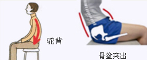

各种各样的生活习性(身体的习惯)中改变坐姿，卧姿，拿物品时的姿势，在无意识之中形成的习惯都会造成体态的改变。 年龄的变化也是要因之一。
弓背的坐姿 侧卧看电视
肩部肌肉变硬 脊椎扭曲带来侧弯
腿部叠放式坐姿 长期用一侧拿物品
脊椎、骨盆会发生扭曲 会导致脊椎侧弯
随着年龄的增长脊椎会发生变化 老年时脊椎和骨盆发生弯曲。
这样的你，要注意！ 交叉腿 / 腹部肥胖 一天内伏案时间过长 猫腰走路 /抱胳膊、托腮

不良姿势
不良姿势形成长年习惯后，不经常活动的肌肉会萎缩，过度活动的肌肉就会产生肌肉疲劳，引起酸痛。
每天端正姿势的伸展！ 每天活动肌肉的按摩！